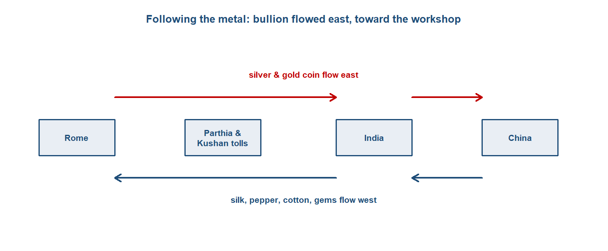
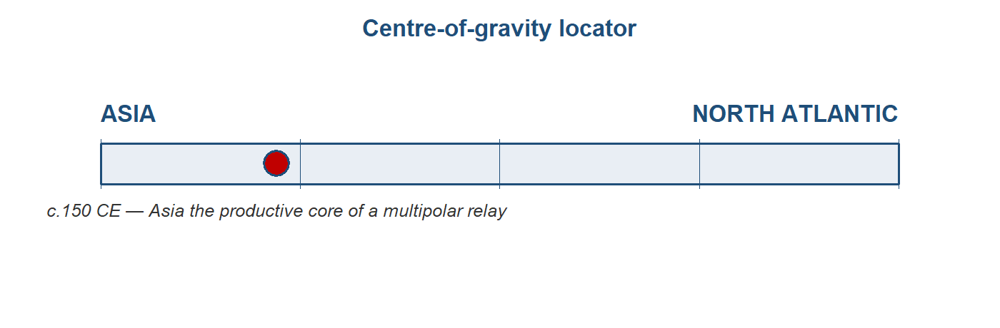
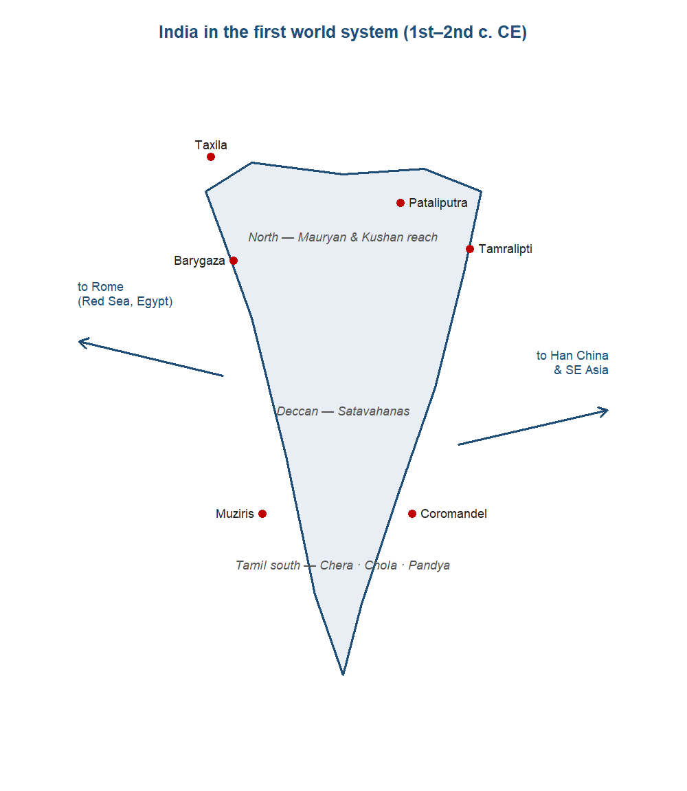
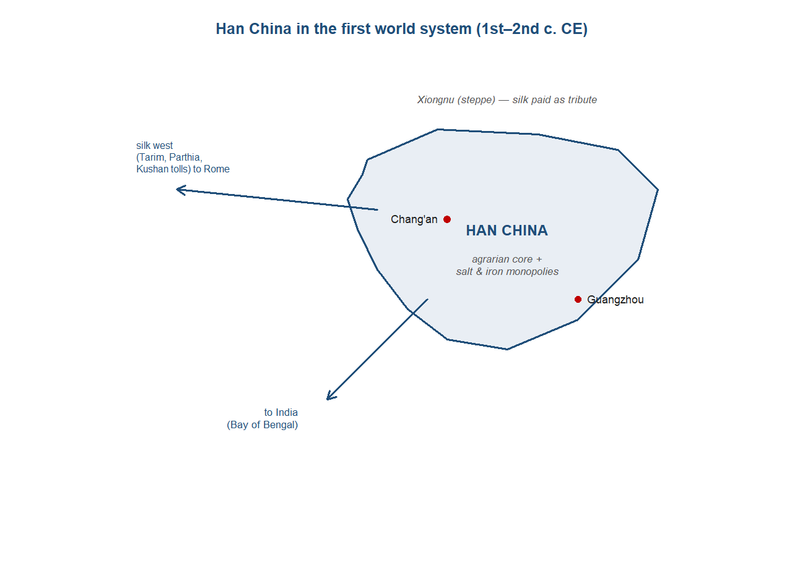
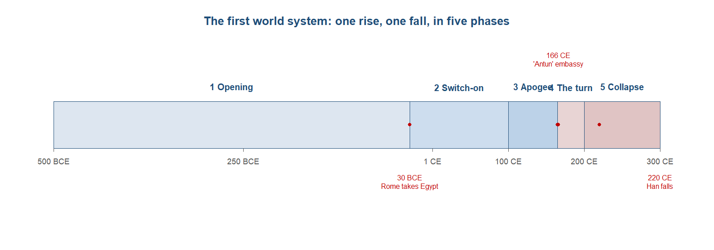
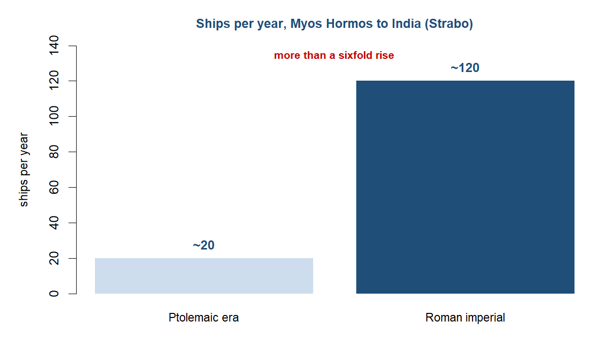
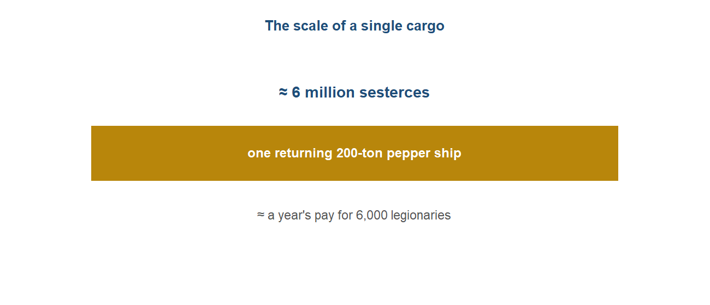
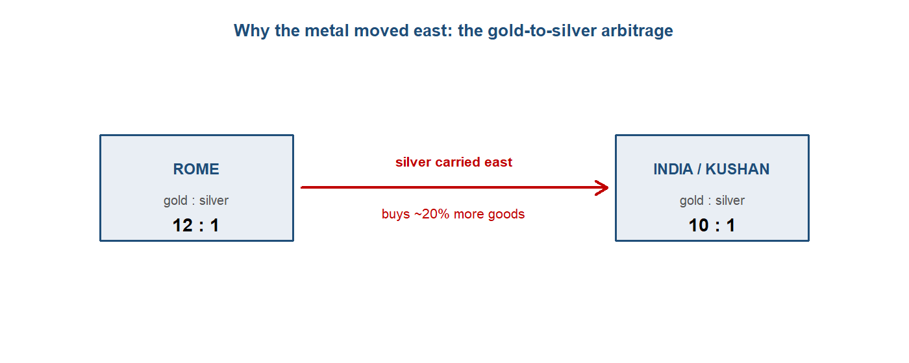

# Indo-Roman coin hoards vs Periplus ports (datasets_by_topic.md, Topic 2).
# 1. Load a published catalogue of Roman coin hoards in South Asia (find-spot, count, date-range).
# 2. Load Periplus emporia coordinates.
# 3. Map hoard density; test whether it tracks the port list.
# 4. Discuss the deposition/non-recovery bias before drawing inferences about "flow".The first world system: Rome was the customer, Asia the workshop
For the first time we can ask where the economy’s centre lay — and the answer is not Rome.
Follow one thing: a stream of Roman silver running east
Around the middle of the first century CE, the elder Pliny grumbled that the Roman empire was haemorrhaging precious metal to pay for the luxuries of the East — by one of his figures, 100 million sesterces a year drained away to India, China and Arabia. The number is rhetorical and much argued over, but the direction is not. Across the early centuries CE, Roman silver and gold flowed steadily eastward across the Indian Ocean and, having arrived, largely stayed: it was melted, re-struck by the Kushan and Saka rulers of north-west India, and absorbed into Asian economies that valued it as metal. Follow that one stream of metal and you have the argument of this chapter. The richest, hungriest consumer of the ancient world paid, in hard coin, an economy whose workshops sat not on the Tiber but on the Tamil coast and beyond. Rome was the customer. Asia was the workshop.1
1 Sources: Pliny, Natural History 6.101, 12.84, via Dalrymple, The Golden Road (2024); McLaughlin, The Roman Empire and the Indian Ocean (2014). Read more: De Romanis, The Indo-Roman Pepper Trade and the Muziris Papyrus (2020) on what the figures can and cannot bear.

Where we are on the arc
In Deep structures: a world without a centre there was no centre to find — only loosely linked riverine cores and the slow diffusion of metals and crops along three nascent channels. This chapter is where, for the first time, the question where is the centre of gravity? can actually be asked, because for the first time the channels fuse into a single, measurable trans-Eurasian relay running from Roman Britain to Han China. The conventional answer is “Rome.” This chapter tests that answer by following the goods and the money — and finds that the connected economy’s productive core lay in Asia, with Rome as its structurally dependent western terminus.2
2 Sources: Findlay & O’Rourke, Power and Plenty (2007), ch. 1; the centre-of-gravity ledger, module_design/centre_of_gravity_ledger.md. Read more: Beaujard, The Worlds of the Indian Ocean, vol. 1 (2019).

The stage and the cast
The right mental picture is not a wheel with Rome at the hub and spokes running out to the provinces and beyond. It is a triangle — Rome, India and China — connected by a relay of intermediary empires, each of which took its cut. The main chain ran Rome to Parthia and the Kushans to Han China; Aksum (in the Red Sea), the Arabian incense kingdoms, and the Indian states rounded out the cast. No single merchant or polity ran the system end to end. It was a relay of empires, not one market — a distinction we will need when we ask, later, whether this was really “one” world economy.3
3 Sources: Findlay & O’Rourke (2007), ch. 1; McLaughlin (2014). Read more: Abu-Lughod, Before European Hegemony (1989), on the “relay” structure of pre-modern world systems.
The cast of this chapter — India, Han China, Parthia and the Kushans, Rome, and the smaller players around the rim — is profiled below. Following the module’s vantage, the profiles run from east to west: the direction in which the system’s goods were made and toward which its bullion flowed. Click any actor to expand how its economy worked, at home and in the relay; India, present in every chapter of this book, is given the fullest treatment.
TipIndia — the production core

India in this period was not a single polity but a layered economy spread across the subcontinent. In the north, the Mauryan empire (c.320–185 BCE) had built South Asia’s first centralised administrative-fiscal state, governed from Pataliputra — a city of perhaps 200,000 people, around twice the size of early Rome — and tied together by royal roads running from Taxila in the north-west to the Bay of Bengal port of Tamralipti. After the Mauryas fragmented, economic weight shifted south and west: the Satavahanas held the Deccan, while the Tamil kingdoms of the far south — Chera, Chola and Pandya — commanded the Malabar pepper coast that Rome most wanted. To the north-west, the Kushans straddled the Hindu Kush and the overland road to China.4
As everywhere in this period, the base of the economy was agriculture and the village. What set India apart was the unusually developed commercial and craft sector built on top of it — and, in particular, the two export industries that would define the subcontinent for the next eighteen centuries: cotton textiles and pepper. The Malabar coast was the world’s principal source of pepper for roughly fifteen centuries, a spice so woven into Roman cooking that around four-fifths of the 478 recipes in the cookbook of Apicius called for it; the Latin and Greek words for pepper and ginger were themselves Tamil loans. Production and long-distance exchange were organised through merchant guilds (the śreṇi) and, distinctively, through Buddhist monasteries placed on the trade routes, which took perpetual endowments (akshaya-nivi) and lent at interest — proto-financial institutions endowed by the merchant class, and known from the donative inscriptions at Nasik and Karle.5
India’s monetary arrangements told the centre-of-gravity story in miniature. Indian states minted their own coin — punch-marked silver in the north, local issues in the south — but they treated incoming Roman gold and silver less as foreign currency to be spent than as bullion to be valued by weight and, increasingly, melted and re-struck. The incentive was structural: gold stood at roughly 10 to 1 against silver in India and on the Kushan and Saka frontier, against about 12 to 1 in Rome, so a given weight of silver carried east bought something like a fifth more goods. That arbitrage pulled Roman metal in and kept it. The clearest measure of how deep it ran was that the Kushan ruler Vima Kadphises struck India’s first gold coinage on the weight standard of the Roman aureus — the empire’s own bullion, re-minted as the subcontinent’s coin.6
Externally, India was the fulcrum of the whole system — the hinge where its maritime and overland arms met. Its trade with Rome ran through three coasts: Barygaza in Gujarat to the north-west, Muziris and Nelkynda on the Malabar pepper coast, and the Coromandel ports facing the Bay of Bengal. The same merchants and the same monsoon knowledge also worked the leg eastward to Southeast Asia and Han China — the third side of the Rome–India–China triangle, and the part of the system least visible through Roman eyes. The balance of this trade ran heavily in India’s favour, because Rome wanted Indian pepper, cotton, gems and ivory while India wanted little that Rome made, so the exchange settled in precious metal. So lopsided was it that, on Pliny’s telling, Indian goods resold in Rome for up to a hundred times their price at source, and the Pandya and Chera kings of the south judged the relationship worth cultivating with embassies to Rome. India was, in short, where the system’s most valued goods were made and where its bullion came to rest: the production core of the first world system.7
Trade profile
- Main exports — pepper and other spices, cotton and fine textiles, gems and semi-precious stones, ivory, pearls.
- Main imports — gold and silver coin above all, with smaller volumes of wine, coral, glass and base metals.
- Export markets — the Roman Mediterranean to the west (via the Red Sea and Egypt); Han China and Southeast Asia to the east; Arabia and the Gulf.
- Import sources — Rome and the wider Mediterranean (bullion, wine, coral, glass); the Gulf and Arabia.8
8 Sources: Casson (ed.), The Periplus Maris Erythraei (1989), for the cargo lists; McLaughlin (2014); Dalrymple (2024).
7 Sources: Roy (p.32) on the three coasts; Dalrymple (Loc 1323, 1326, 1335, 1338) on the hundredfold markup and the southern embassies. Read more: the India compendium readings/notes/kindle_compendium/10_india_longrun.md.
6 Sources: McLaughlin, Indian Ocean (Loc 4323), on the 10:1-versus-12:1 ratio and the resulting margin; Dalrymple (Loc 1634, 1636) on Vima Kadphises’s gold coinage.
5 Sources: Eaton (Loc 3659) on Malabar pepper; Dalrymple (Loc 1294, 1298) on Apicius and the Tamil loan-words; on guilds and monastic finance, Schopen (1997, 2004), Ray (1994) and Neelis (2011), with the Nasik (Ushavadata) and Karle (Bhutapala; Yavana donors) inscriptions. Read more: the research note module_design/topic_02_research_scale_internal_buddhism_2026-06-18.md.
4 Sources: Roy (p.24) on the Mauryan state; Dalrymple (Loc 713) on Pataliputra’s size; Dalrymple (Loc 799) on Ashoka’s roads; Roy (p.32) and Dalrymple (Loc 1550) on the southern kingdoms and the Kushan passes. Read more: the brief module_design/02_topic_2.md.
TipHan China — the agrarian mirror

Han China was Rome’s structural opposite, and the eastern anchor of the whole chain. Where Rome leaned on the customs of trade, the Han ran an agrarian-fiscal order that contemporaries and later historians have called “physiocratic-military”: its wealth came from the land and the peasant household, and its revenue from a light land tax of one-thirtieth of the harvest, a poll tax in cash, and — decisively — state monopolies on salt and iron established under Emperor Wu in 119 BCE. Those monopolies were no sideline. At their height the salt and iron revenues supplied more than half of central government income, run through a network of state foundries staffed in part by convict labour. The state declared agriculture “the basis of the whole world” and taxed commerce as a thing to be managed rather than courted — the mirror image of Rome’s consumer empire, which produced little the East wanted and paid for its appetites in coin.9
The scale of the thing was extraordinary. The census of 2 CE returned 12.2 million households and 59.6 million people — a population on the order of the Roman empire’s, governed from a single administrative centre rather than a ring of provinces. The capital, Chang’an, anchored a network of cities and registered markets: its eastern market alone covered some 500,000 square metres, the western market half that, the commercial heart of an empire whose imperial highways ran for thousands of miles. This was a world of free smallholders — a typical free farm supported a family of four or five on around eleven acres — overlaid by a state bureaucracy of roughly 120,000 staff, larger and costlier than Rome’s civilian administration.10
Money told the same comparative story as everything else. The Han minted on a vast scale — roughly 28 billion wu zhu bronze coins in the last century of the Western Han, each a coin of about five zhu — yet the per-capita money supply ran at perhaps half of Rome’s, and it was almost entirely low-value bronze, where Rome’s was around three-fifths gold and a third silver by value. A monetised economy, then, but a shallow-denomination one, suited to a peasantry making small transactions rather than to long-distance bullion settlement. Wealth, too, was far flatter than at the western end of the chain: the largest Han family estates stood at under a tenth of the size of a great Roman one. At the bottom, tenants handed over half to two-thirds of their crop and the destitute borrowed at interest rates reaching 200 per cent — but the towering private fortunes of the Roman senatorial class had no real Han equivalent.11
The good the rest of Eurasia wanted from China was silk, woven in workshops and households across the empire and used by the state itself as a currency of tribute — in one year the Han sent 30,000 bales of it to buy off the Xiongnu of the steppe. Silk’s road west was overland, and it ran through other people’s hands. The opening came with the missions of Zhang Qian, dispatched around 138 BCE to seek allies against the Xiongnu; he reached Transoxiana and Bactria, returned after some fourteen years, and brought back the first Chinese knowledge of the Western Regions. The Han then fought their way into the Hexi Corridor and the Tarim oasis kingdoms, garrisoning the route. But beyond the frontier the silk passed into the hands of Parthian and Kushan intermediaries, each of whom taxed the flow and took a cut, which is why no single merchant ever ran the route from end to end. A direct India–China leg ran alongside it, by the Bay of Bengal and the Kushan passes. The faintest, most telling trace of the whole system came in 166 CE, when an embassy claiming to come from the Roman emperor “Antun” — Marcus Aurelius — was recorded reaching the Han court: the two ends of Eurasia, however indirectly, in contact at last.12
Trade profile
- Main exports — silk above all, raw and woven; lacquerware and other fine manufactures in smaller quantities.
- Main imports — horses (the prized “Heavenly Horses” of Ferghana), jade and other Central Asian goods; little of Roman make, which reached the court only as curiosities.
- Export markets — westward overland through the Tarim, Parthia and the Kushan lands toward Rome; the steppe peoples to the north, paid in silk as tribute; India and Southeast Asia to the south.
- Import sources — the steppe and the Western Regions (horses, jade); India, by the southern leg.13
13 Sources: Lewis (p.115, p.143); McLaughlin, Silk Routes (Loc 1945) on the Ferghana horses. Read more: McLaughlin (2016); von Glahn (2016).
12 Sources: Lewis (p.115) on the 30,000 bales of silk tribute and (p.143) on the relay structure; McLaughlin, Silk Routes (Loc 1734, 2838) on Zhang Qian’s missions and the Western Regions, and (Loc 5501) on the 166 CE “Antun” embassy. Read more: McLaughlin, The Roman Empire and the Silk Routes (2016).
11 Sources: Lewis (p.65) on the ~28 billion wu zhu coins and (p.111, p.115) on tenancy, interest, and the estate comparison; von Glahn (Loc 1291, 1294) on the per-capita money supply and the bronze-versus-gold composition. Read more: Lewis (2007); von Glahn (2016).
10 Sources: von Glahn (Loc 1657) on the 2 CE census; Lewis (p.83) on the Chang’an markets and (p.110) on the smallholding farm; McLaughlin, Silk Routes (Loc 5758) on the size of the Han bureaucracy. Read more: Lewis, The Early Chinese Empires: Qin and Han (2007).
9 Sources: von Glahn (Loc 1261) on the salt and iron monopolies as over half of central revenue; Lewis (p.110) on the land tax and the typical farm; the brief module_design/02_topic_2.md, §1, on the “physiocratic-military” contrast. Read more: von Glahn, The Economic History of China (2016).
TipParthia and the Kushans — the middlemen
Between Rome at one end of the relay and India and Han China at the other stood the two empires that held the overland middle, and neither was a producer of the goods that crossed it. Parthia rose in the 240s BCE from a nomadic people near the Caspian and, expanding west under Mithridates I, came to straddle the routes running from the Euphrates across Iran toward Central Asia. The Kushans were a later arrival and, in a sense, a by-product of war further east: displaced when Han pressure on the Xiongnu set off a chain of steppe migrations, the Yuezhi were pushed into north-west India, where Kujula Kadphises united them around 50 CE into the Kushan kingdom. By about 90 CE the Kushans had taken the Indus ports as well, so that a single power now commanded both the passes of the Hindu Kush and a gateway to the sea — the hinge between Rome, India and Han China.14
What these states sold was not goods but passage. The overland route west of the Euphrates and through the mountains was not a single road run end to end by anyone; it was a relay, and at each stage an intermediary empire took its cut. No merchant ever travelled the length of it, so the Chinese silk that reached a Roman market had changed hands and paid a toll many times over — which is why the same bolt could be worth a small fortune in the West while costing far less at source. That structure of stacked rents was the economic substance of Parthia and the Kushans: they lived off the flow they sat astride, not off anything they made.15
The Kushans did more than tax the traffic, though; they absorbed a share of the bullion it carried and turned it into their own coin. The metal that Rome paid eastward for pepper, silk and gems did not stop at India’s coasts but reached the north-western frontier, where the favourable gold-to-silver ratio — roughly 10 to 1 against Rome’s 12 to 1 — gave incoming Roman metal more purchasing power and an incentive to stay. The clearest sign of how deep that absorption ran was that the Kushan ruler Vima Kadphises, conquering northern India in the early second century CE, struck India’s first gold coinage on the weight standard of the Roman aureus. The empire’s own bullion, in other words, was re-minted as the subcontinent’s coin under a Kushan king — the middleman not merely passing the metal along but coining it.16
Their position also carried more than goods and coin. Kushan control of the Hindu Kush passes opened the road north for Buddhist monks, who moved out of India into Bactria and on through the oasis kingdoms of Central Asia — Uzbekistan, Tajikistan, Xinjiang — toward China. Sited along the same routes the merchants used, monasteries followed the trade, so that the religion travelled the relay alongside the silk and the silver. This was the overland counterpart to the merchant- and-monastery pairing that bound commerce to Buddhism in India itself, and it set the stage for the faith’s later passage into China, which opened in earnest after the Han collapse.17
The two empires were not equivalent. Parthia was the more purely overland gatekeeper, locked in recurrent tension with Rome along the Anatolian and Mesopotamian frontier, while the Kushans — bordering Parthia, Han China and the steppe at once, and reaching the sea through the Indus — were better placed to draw on the large consumer markets at both ends of Eurasia. But the role was the same in kind. Neither was the customer Rome was, nor the workshop India was. They were the states that made the relay a relay: the reason the system was a chain of empires rather than one market, and the reason no single hand ever ran it from end to end.18
Trade profile
- Goods passing through — Chinese silk above all, moving west; pepper, gems, cottons and other Indian goods reaching the overland leg; Roman gold and silver coin moving east.
- What they extracted — transit tolls and stacked rents at each stage of the relay, taken in kind and in coin; for the Kushans, in addition, the re-minting of absorbed Roman bullion into their own gold and copper coinage.
- Westward connections — Parthia to the Roman frontier in Anatolia and Mesopotamia; the Kushans, via the Indus ports, to the maritime route and so to Rome.
- Eastward connections — the Kushans to Han China through the Hindu Kush passes and the Tarim oasis kingdoms, and to India to the south; Parthia onward to the Central Asian caravan network.19
19 Sources: McLaughlin, Silk Routes (Loc 2433, 2612), on Kushan links to Han and the Tarim; the old Topic 2 deck on Sogdian carriage and the Parthian–Roman frontier trade in silk and glassware. Read more: McLaughlin, The Roman Empire and the Silk Routes (2016).
18 Sources: the old Topic 2 deck on Parthia’s frontier tension with Rome and the Kushans’ position between large consumer markets west and east; McLaughlin, Indian Ocean (Loc 5839), on the synchronised crisis that destroyed Parthia, the Kushans and the rest together by the third century. Read more: the brief module_design/02_topic_2.md.
17 Sources: Dalrymple (Loc 1550, 1572, 1624) on Kushan control of the passes and Buddhist monks moving north into Bactria and Central Asia. Read more: Neelis, Early Buddhist Transmission and Trade Networks (2011), on the northern routes.
16 Sources: McLaughlin, Indian Ocean (Loc 4323), on the 10:1-versus-12:1 ratio and its pull; Dalrymple (Loc 1634, 1636) and McLaughlin, Silk Routes (Loc 2715), on Vima Kadphises’s gold coinage on the aureus standard. Read more: the India compendium readings/notes/kindle_compendium/10_india_longrun.md.
15 Sources: Lewis, The Early Chinese Empires (p.143), “no merchant ever travelled the length”; McLaughlin, Silk Routes (Loc 2671), on the markups along the route. Read more: Findlay & O’Rourke, Power and Plenty (2007), ch. 1, on intermediary rents in pre-modern relays.
14 Sources: the brief module_design/02_topic_2.md and the old Topic 2 deck on the Parthian and Kushan rise; McLaughlin, Silk Routes (Loc 2303), on Kujula Kadphises and the founding of the Kushan kingdom; Dalrymple (Loc 1550) on Kushan control of the Hindu Kush passes. Read more: Beckwith, The Scythian Empire (2023), on the steppe migrations behind the Kushans.
TipRome — the wealthy consumer
Rome in this period was an unusual state for its time: a commercial-fiscal empire whose treasury leaned, to a degree no other ancient great power matched, on the customs of long-distance trade. Its land taxes were comparatively light — a poll tax of a single denarius a year, a Syrian land tax of around one per cent of assessed wealth — while the duties on trade did the heavy lifting. By the first century CE foreign trade supplied something like a third of imperial revenue, the bulk of it from the tetartē, a quarter-rate (25 per cent) customs duty levied on eastern luxuries as they entered the empire, against a mere one-fortieth (2.5 per cent) portorium on goods moving between the provinces. The fiscal machine ran on what came in from outside, not on what was grown at home.20
What that revenue paid for, above all, was the army. At its height the Roman military stood at roughly 300,000 professional soldiers, costing more than 330 million sesterces a year — the single largest charge on the state, swallowing the greater part of an imperial budget of around a thousand million sesterces. The army was not only the empire’s great expense but its great redistributive engine. Britain and Gaul ran as a deficit periphery, importing more than they sent out and held in place by army pay — pay funded from the customs of the eastern trade and from the silver and gold of the imperial mines, the Iberian and Dacian workings that gave Rome the metal it needed. Power and plenty were bound together: a professional army that both depended on trade revenue and secured the frontiers within which that trade could be taxed.21
Rome’s money told the same story from the other side. The empire coined heavily in silver and gold, and the relative price of the two metals sat at roughly 12 to 1 — silver to gold — at home. That ratio mattered because it differed from the East’s: gold stood at about 10 to 1 against silver in India and on the Kushan and Saka frontier, so a given weight of silver carried east bought something like a fifth more goods than it did in Rome. The arbitrage pulled Roman metal outward and gave the bullion drain a monetary motive on top of the appetite that drove it. Underwriting the whole period of Mediterranean prosperity was a benign climate — the Roman Climate Optimum, a warm, wet and stable spell from roughly 200 BCE to 150 CE that coincided with the empire’s maximum extent and the parallel flourishing of Rome and Han.22
Externally, Rome was the system’s wealthy terminus — its hungriest consumer, paying in coin. Its artery to the East ran by sea, down the Red Sea from the Egyptian ports of Berenike and Myos Hormos and across the open ocean on the monsoon to the Indian coast, the route Rome controlled only after annexing Ptolemaic Egypt in 30 BCE. What came back filled the holds: pepper and other spices, fine Indian cottons, gems and pearls, silk relayed from China, and incense from Arabia. What Rome sent out was thinner — some wine, coral, glass and base metals, but above all gold and silver coin, because the East wanted little that Rome made. The imbalance entered the Roman imagination as a grievance. Pliny complained that India, China and Arabia drained 100 million sesterces a year from the empire, with 50 million or more going to India alone — figures that were rhetorical and are much argued over, but that point in a direction the coin hoards of southern India confirm. Rome was, structurally, a consumer dependent on a flow it could neither control nor reproduce, paying for it in a finite stock of bullion that, once shipped east, was melted down and did not come back.23
Trade profile
- Main exports — gold and silver coin above all, with smaller volumes of wine, coral, glass and base metals.
- Main imports — pepper and other spices, fine cottons, gems and pearls, silk (relayed from China), incense and aromatics.
- Export markets — India and Arabia to the east (via the Red Sea and Egypt), and indirectly Han China; the empire’s own western and northern provinces.
- Import sources — India (spices, cottons, gems) above all; Arabia (incense); China (silk, via Parthian and Kushan intermediaries).24
24 Sources: Casson (ed.), The Periplus Maris Erythraei (1989), for the cargo lists; McLaughlin (2014); the brief module_design/02_topic_2.md.
23 Sources: McLaughlin, Indian Ocean (Loc 4994, 1657) on Pliny’s 100M / 50M+ figures and their rhetorical character; the brief module_design/02_topic_2.md, §1, on Berenike, Myos Hormos and the cargo lists; old-module Topic 2 text on glass, wine and pottery as Rome’s few real exports. Read more: De Romanis, The Indo-Roman Pepper Trade and the Muziris Papyrus (2020), on what the figures can and cannot bear.
22 Sources: McLaughlin, Indian Ocean (Loc 4323) on the 12:1-versus-10:1 ratio and the resulting margin; the old-module Topic 2 text on the Roman Climate Optimum (c.200 BCE–150 CE) and the Rome–Han parallel. Read more: Harper, The Fate of Rome (2017), on climate and the empire’s trajectory.
21 Sources: McLaughlin, Indian Ocean (Loc 179, 436) on the 300,000-strong army and its >330M-sesterce cost; McLaughlin, Indian Ocean (Loc 469, 474, 497) on Britain and Gaul as a subsidised deficit periphery and on mine bullion. Read more: the brief module_design/02_topic_2.md, “Library additions.”
20 Sources: McLaughlin, Indian Ocean (Loc 25, 173) on the one-third share and the tetartē-versus-portorium contrast; McLaughlin, Silk Routes (Loc 5695, 5698) on the light poll and land taxes. Read more: McLaughlin, The Roman Empire and the Indian Ocean (2014).
TipThe smaller players — Aksum, Arabia, Alexandria
The rim that funnelled the trade: the Red Sea kingdom of Aksum, the incense kingdoms of Arabia, and Alexandria — Rome’s great western emporium and the gateway to the monsoon route.25
25 Source: McLaughlin, The Roman Empire and the Indian Ocean (2014).
NoteHow we know
Our evidence for this system is thin, indirect, and skewed. It comes mainly from three sources: merchant handbooks (above all the Periplus of the Erythraean Sea); coin hoards, especially the Roman coins that pile up in southern India; and a single, astonishing commercial document, the Muziris papyrus, recording the financing and valuation of one ship’s cargo. The problem is that almost all of it is written through Roman eyes — which is exactly how the trade came to be read as a Roman story. A useful corrective sits on the island of Socotra, in the mouth of the Gulf of Aden, where a cave preserves graffiti left by ancient sailors: of 219 inscriptions, 192 are Indic — Brahmi and Indian names — against a handful of others. Whose ocean was it? The sailors answered the question themselves.
Sources: Casson (ed.), The Periplus Maris Erythraei (1989); De Romanis (2020) on the Muziris papyrus; Strauch (ed.), Foreign Sailors on Socotra (2012) on the cave graffiti. Read more: the data-survival-and-bias note, module_design/datasets_by_topic.md.
Inside the economies: three machines, all agrarian
Before following the trade outward, step inside each economy — because the long-distance trade this chapter is about touched only a sliver of any of them. All these economies were overwhelmingly agrarian; the vast majority of people, everywhere, farmed, and never touched a trans-Eurasian trade good. What differed was the machinery on top of the farms. Rome was the outlier: a comparatively commercial-fiscal state, its land taxes relatively light, with customs duties supplying perhaps a third of imperial revenue. Han China was the mirror — an agrarian state run on state monopolies of salt and iron, its wealth far flatter (its largest private estates a fraction of Rome’s greatest fortunes). India was deeply commercial, threaded with merchant guilds — and yet its internal economy is the one we can least measure, precisely because its record did not survive in the Roman manner. Keep this in view: when we later locate the “centre of gravity,” we are locating the centre of the connected economy, not of total output.26
26 Sources: McLaughlin (2014) on the customs share of Roman revenue; von Glahn (2016) on Han monopolies and wealth distribution. Read more: Scheidel & Friesen, “The size of the economy and the distribution of income in the Roman Empire,” Journal of Roman Studies 99 (2009).
The period on its own terms: one rise, one fall, in five phases
The first world system had a life-cycle — a single rise and a single fall — that can be read in five phases.27
27 Source: this five-phase framing follows the Topic 2 story spine, module_design/topic_02_story_spine_2026-06-18.md, built from Findlay & O’Rourke (2007) and McLaughlin (2014).

Phase 1 — the opening (c.500–30 BCE). The first world system did not switch on in a single moment; it was prised open over four centuries, as the channels laid down earlier were welded into administered space. The first welder was Achaemenid Persia, which from the sixth century BCE bound the Near East into one tributary zone governed through satrapies, moving goods, gold and information along the royal roads from the Aegean to the Indus. Onto that frame came the hinge event of the period. Alexander’s conquests of 336–323 BCE swept away the Persian empire and fused the Mediterranean, the Near East and north-western India into a single Hellenistic ecumene, a world of Greek-speaking cities that ran from the Jaxartes to the Nile. The most durable of these was Alexandria, which became the western emporium of the whole system and the point at which Greek knowledge of India — its geography, its goods, and eventually the rhythm of the monsoon — entered the Mediterranean for good. Alexander himself is best read as the hinge, not the substance: he opened the doors, but the trade that flowed through them was built by others over the following centuries. With the Persian and then the Macedonian order broken up among successors, the durable poles of the future system took shape, each independently and roughly at once. Parthia rose in the third century BCE from a nomadic base near the Caspian to straddle the overland route west of the Euphrates. In China, the Qin unification of 221 BCE and the long Han dynasty that followed from 206 BCE built a centralised agrarian empire at the eastern end of Eurasia. In India, Chandragupta Maurya founded the subcontinent’s first centralised state (c.322–185 BCE), governed from Pataliputra and tied together by Ashoka’s royal roads from Taxila in the north-west to the Bay of Bengal port of Tamralipti; the depth of the Mauryan order was visible at its very birth, when Chandragupta settled his frontier with Seleucus around 303 BCE by ceding the eastern provinces in exchange for 500 war elephants — a transfer that says as much about Indian resources as about Greek reach. To the south, the Tamil kingdoms of the far peninsula commanded the pepper coast that the West would soon crave. The maritime arm thickened in step with the poles. The Greek navigator Eudoxus of Cyzicus opened regular sailings to India around 118 BCE, after a shipwrecked Indian mariner was found on the Red Sea coast and supplied the route, and over the following century Indian Ocean traffic grew from sporadic ventures into something approaching a regular trade. By the time Rome arrived as a Mediterranean power, the apparatus of the system already existed; what it lacked was a wealthy western customer with direct control of the Red Sea coast. Rome’s drive toward Egypt — completed when Octavian annexed the Ptolemaic kingdom in 30 BCE — supplied exactly that, and set up the switch-on that followed.28
28 Sources: the brief module_design/02_topic_2.md, §1, on Achaemenid Persia, Alexander as hinge, Alexandria and the Hellenistic ecumene; on the poles, the compendium readings/notes/kindle_compendium/03_T2_rome_han_first_world_system.md — Parthia (McLaughlin, Silk Routes, Loc 5049), Qin and Han (Lewis, p.16), the Maurya (McLaughlin, Indian Ocean, Loc 5308); on the 303 BCE cession and the 500 elephants, Grainger, Rise of the Seleukid Empire (Loc 1346, 1363); on Eudoxus and the ~118 BCE opening, McLaughlin, Indian Ocean (Loc 2086); Dalrymple (Loc 799) on Ashoka’s roads. Read more: Cunliffe, By Steppe, Desert, and Ocean (2015), on the opening of the channels.
29 Sources: Dalrymple (Loc 1227, 1234) on Eudoxus and the Hippalus monsoon crossing; the brief module_design/02_topic_2.md, §1. Read more: Sidebotham, Berenike and the Ancient Maritime Spice Route (2011).
Phase 2 — the switch-on (30 BCE to the first century CE). What turned sporadic contact across the Indian Ocean into a high-volume artery was, first of all, a political event: Rome’s annexation of Ptolemaic Egypt in 30 BCE. Egypt handed Rome direct control of the Red Sea coast and its India-facing ports, together with the accumulated Ptolemaic experience of the eastern trade. The Greek navigator Eudoxus of Cyzicus had opened regular sailings to India around 118 BCE, and over the following century Greco-Roman skippers learned to use the monsoon — the seasonal reversal of winds, traditionally credited to a pilot named Hippalus — to run straight across the open ocean rather than creep around its rim.29
The change in volume was dramatic. Where the Ptolemies had sent perhaps twenty ships a year to India, Strabo recorded around 120 leaving the single Red Sea port of Myos Hormos in the early imperial period — more than a sixfold rise.30
30 Source: McLaughlin, The Roman Empire and the Indian Ocean (2014), Loc 2106, citing Strabo, Geography 2.5.12.
31 Sources: Casson (ed.), The Periplus Maris Erythraei (1989); McLaughlin, Indian Ocean (Loc 2766), on the 200-ton cargo and its value.

The infrastructure behind that figure is unusually well documented for the ancient world. Two Red Sea ports, Berenike and Myos Hormos, were the Roman points of departure; the prize destination was Muziris, the Malabar pepper emporium. A merchant’s handbook, the Periplus of the Erythraean Sea, written around the middle of the first century CE, set out the ports, cargoes and sailing seasons of the whole route — the closest thing the period has left us as a commercial manual. And the cargoes were large: a single returning pepper ship of around 200 tons could carry goods worth more than six million sesterces, enough to pay six thousand legionaries for a year.31
The defining feature of the switch-on, though, was the direction in which payment flowed. Rome bought pepper, fine cottons, gems, silk and incense, and paid for them overwhelmingly in gold and silver coin, because the East wanted little that Rome made. The monetary arbitrage worked in the same direction — roughly 10 to 1 gold-to-silver in India against 12 to 1 in Rome — giving the metal a further reason to move east. And move east it did, in quantities large enough to enter the Roman imagination as a grievance: this was the period in which the eastward bullion drain that defines this chapter began in earnest.32
32 Source: McLaughlin, Indian Ocean (Loc 4323), on the arbitrage and the drain.
33 Sources: Dalrymple (Loc 1294) on Apicius; on the debate, De Romanis (2020) and Cobb (2018).

It was also the period in which pepper crossed from luxury to near-staple — the spice appeared in some four-fifths of the recipes in Apicius, a reach that pointed to a broad market rather than only an elite one, and the empirical seed of the luxury-versus-mass-trade debate taken up later in this chapter.33By the end of the first century CE the route was regular, mature and fiscally important — customs on the eastern trade would come to supply something like a third of imperial revenue — and the stage was set for the apogee, when all four poles of the system flourished at once.
Phase 3 — the apogee (1st–2nd c. CE). From the late first century CE the system reached its height, with all four poles flourishing at once and the densest evidence the ancient world has left for any of this. It is the moment when the volume of the eastern trade peaks and, by good fortune, the documentation thickens enough to argue about. Eastern Indian Ocean imports ran on the order of more than a thousand million sesterces a year, of which the Roman treasury raised over two hundred and fifty million through the tetartē, the 25 per cent duty levied on eastern luxuries at the Red Sea ports — a customs stream large enough that trade came to supply something like a third of imperial revenue. The single richest document is the Muziris papyrus, a second-century commercial contract recording the financing and fiscal assessment of one returning Indiaman, the Hermapollon, laden with some 220 tons of pepper, textiles, spices and ivory. Its value is genuinely disputed and is best left so: different reconstructions put the full cargo near 9.2 million sesterces with around 7 million after the duty was taken, while the papyrus itself records the taxable three-quarters at 1,151 talents and change — figures that do not reconcile cleanly and should not be silently merged. Around this one document sits a wider archive of the apogee. The Periplus of the Erythraean Sea, a merchant’s handbook of the mid-first century, set out the ports, cargoes and sailing seasons of the entire route. The South-Indian coin hoards make the bullion flow physical: roughly twenty hoards of Roman silver and gold across the peninsula, among them the Kottayam hoard of more than 8,000 gold aurei, the latest struck under Nero. The excavated Red Sea port of Berenike supplies the material backbone at the Roman end, with Indian pottery, peppercorns and South Asian textiles recovered from its warehouses and rubbish. And the most evocative emblem of the system’s reach came in 166 CE, when an embassy claiming to come from the Roman emperor “Antun” — Antoninus Pius or Marcus Aurelius — was recorded reaching the Han court, the two ends of Eurasia in faint but direct contact at the very peak. Underneath all of this lay a benign environment: the Roman Climate Optimum, a warm, wet and stable phase running roughly from the second century BCE to the mid-second century CE, which underwrote Mediterranean prosperity and helped the apogee along. This was the high-water mark — the fullest flow of goods and the densest evidence of connection — and it was also, precisely because the routes now ran so densely, the moment before the turn, when the same arteries that carried pepper and silk would carry plague.34
34 Sources: on the >1,000M-sesterce imports and >250M in tetartē, McLaughlin, Indian Ocean (Loc 535); on the 25 per cent duty and the customs share of revenue, McLaughlin (Loc 173, 25); on the Hermapollon and its disputed value, the compendium readings/notes/kindle_compendium/03_T2_rome_han_first_world_system.md (McLaughlin, Indian Ocean, Loc 2403, 4941), with the reconciliation warning in the brief module_design/02_topic_2.md; on the Kottayam hoard (>8,000 aurei) and the ~20 hoards, McLaughlin (Loc 4931); on the 166 CE “Antun” embassy, McLaughlin, Silk Routes (Loc 5501); the Roman Climate Optimum from Harper, The Fate of Rome (2017). Read more: De Romanis, The Indo-Roman Pepper Trade and the Muziris Papyrus (2020), on what the Hermapollon figures can and cannot bear.
35 Sources: Harper, The Fate of Rome (2017), pp. 18, 133, and Harper, Plagues upon the Earth (Loc 1672, 1675), on smallpox and the first intercontinental outbreak; McLaughlin, Indian Ocean (Loc 5479) and Silk Routes (Loc 5553) on the Han army loss of 162 CE and the Socnopaiou Nesos register; the brief module_design/02_topic_2.md, §1, on the ~15 per cent urban mortality and the arouras 20-to-7 land-record shift, and §§3, 6 on the contested mortality. Read more: Harper (2017), ch. 3, for the strong reading and its critics.
Phase 4 — the turn (c.165–200 CE). What ended the apogee was not a rival or a market but a pathogen. In 165 CE Roman legions under Lucius Verus stormed Seleucia on the Tigris and occupied Babylonia; as they withdrew, they carried west a disease that the sources describe with a black, pustular rash, and which most modern readers take to have been smallpox. The Antonine Plague that followed was, on one account, the first genuinely intercontinental outbreak — and it travelled the same arteries that had carried pepper and silver, moving from the eastern frontier through the army and the ports into the heart of the empire by 166. The lesson was the one this chapter keeps returning to: the routes that integrated a system also transmitted its shocks, and a connected world was a vulnerable one. Disease here entered the narrative not as a local misfortune but as a world-historical force, striking the poles of the relay at roughly the same moment. The plague was not confined to Rome; it ran east along the steppe and frontier as well, and in 162 CE the Han are reported to have lost something like a third of their northern frontier army to disease in a single year, hollowing out the military machine on which the dynasty’s order rested. The mortality, though, is precisely where the evidence thins and the historians divide. Kyle Harper has read the Antonine Plague as a true demographic catastrophe — urban death rates above fifteen per cent, a population that did not recover, an empire knocked off its trajectory — and points to suggestive local traces, among them Egyptian land-lease records in which the plots a single tenant worked shrank from around twenty arouras before 165 to roughly seven after, and a village register at Socnopaiou Nesos that lost seventy-eight of 244 men in a few months. His critics answer that these are scattered, ambiguous fragments, that ancient mortality cannot be reconstructed from a handful of papyri, and that a severe but survivable epidemic has been inflated into an empire-breaking event; the figure of seven million deaths sometimes attached to the outbreak is an estimate built on thin foundations, not a measured total. This book takes the dispute as exactly that — a live and unresolved methodological quarrel about how to infer demographic disaster from fragmentary records — rather than settling on a single number. What is not in dispute is the direction of travel and the shape of the turn: the plague moved with the trade, both ends of Eurasia were struck within a few years of one another, and the integration that had defined the apogee now began to read as a liability. By the end of the century the frontiers were under pressure, the mints were debasing their silver, and the system that had peaked in living memory had started, quietly, to come apart.35
Phase 5 — the synchronised collapse (c.220–300 CE). The decisive feature of the system’s end was not that any one pole fell but that all of them fell together. In 220 CE the last Han emperor abdicated and China broke into the Three Kingdoms, opening the long Period of Disunion. Within a few years the other anchors went the same way: the Satavahana kingdom of the Deccan disintegrated in the 220s, the Parthian empire was overthrown by the Sasanians in 224, the Kushan empire — the great re-minter of Roman gold — collapsed around 230, and in the far south the Chera and Pandya dynasties that had supplied Rome’s pepper were destroyed. Rome itself entered the crisis of the third century from 235, a half-century of usurpation, debasement, frontier breach and fresh epidemic — the Plague of Cyprian, an outbreak of uncertain cause, swept its territories from around 249. By the period between 220 and 284, McLaughlin observes, Han China, Parthia, the Satavahanas, the Kushans, the Tamil dynasties and Rome had all been destroyed or thrown into crisis. That near-simultaneity is the single strongest piece of evidence in the whole chapter that this had been one connected system rather than a set of regional economies that happened to trade: poles that rose together and fell together were, in some real sense, parts of one whole, bound by the same arteries and exposed to the same shocks along them. The mechanics of the unwinding reinforced the point. The overland route decayed as the empires that had policed its tolls fragmented, and the long-distance trade that had measured the system’s integration thinned with them. By around 300 the first world system had frayed past the point of recovery. Its western end did not vanish so much as relocate: as the Roman West fragmented, the Mediterranean’s centre of gravity shifted east to Constantinople, the new capital on the Bosphorus, leaving the old core hollowed and the centre displaced toward Asia once more. That displacement is the hand-off to the next chapter. The relay built around Rome and Han had run its single rise and single fall; what came next was not its restoration but a new integrating order, coalescing in the centuries after 300 around the rise of Islam and a resurgent Tang China — two fresh cores around which the Indian Ocean would knit itself together again, with Europe, for a long while yet, on the rim.36
36 Sources: McLaughlin, Indian Ocean (Loc 5839) on the synchronised destruction of Han, Parthia, Satavahana, Kushan, the Tamil dynasties and Rome by AD 220–284, and (Loc 5841, 5842) on the fall of Han (220), the Sasanian overthrow of Parthia (224), and the Satavahana and Kushan collapses; Harper, The Fate of Rome (pp. 18, 130) on the Plague of Cyprian (c.249); the brief module_design/02_topic_2.md, §6, on the fraying by ~300 and the eastward shift to Constantinople. Read more: Findlay & O’Rourke, Power and Plenty (2007), ch. 1, on the synchrony argument.
Reading the period: the four questions
Was the system integrating or disintegrating (Q1)? Integrating, then disintegrating — and the synchrony of the five phases is the proof that it was one system. The poles rose together and fell together. But the very fact that the Antonine Plague could travel from one end to the other teaches the first of this book’s running lessons: the routes that integrate also transmit shocks. Integration is not costless.37
37 Read more: on “integration breeds fragility” as a recurring mechanism, see the module synthesis, module_design/11_synthesis.md, Q1.
38 Sources: Dalrymple (2024) and McLaughlin (2014) on relative carriage costs (the two ends of the 5×–30× range); on the India–China leg, Sen, Buddhism, Diplomacy, and Trade (2003). Read more: Diocletian’s Edict on Maximum Prices (301 CE) as the anchor for land-vs-sea cost ratios.
Which routes carried the integration (Q2)? Both sea and land, as complements, not rivals. The sea carried bulk — pepper, gems, textiles — by the shipload, and it was far cheaper than land carriage. (How much cheaper is itself disputed: our sources support a range from roughly fivefold to thirtyfold, and the book takes the gap as a teaching point rather than papering over it — see the Debate below.) The overland routes carried high-value, low-bulk silk westward through a chain of Parthian and Kushan tolls, with each intermediary taking a cut, which is why no single merchant ran the route’s length. And a crucial third leg ran directly between India and China, by the Bay of Bengal and the Kushan passes, bypassing the Mediterranean altogether. Picture the triangle again: three legs, and Rome is only one corner.38
ImportantFollow the money
Which flow did the actual integrating (Q3)? Treat bullion as a good, and it points straight to the answer. Roman precious metal flowed east and stayed there. Why east? Because the relative price of gold to silver differed across the system — gold was relatively cheaper in Rome, silver relatively dearer in India — so silver shipped east bought more. Arbitrage, in a word. The metal moved toward the production centre, because that is where the goods the rest of the world wanted were made and where the silver came to rest, re-minted by Kushan and Saka rulers. To grasp the scale of a single voyage: the cargo of one returning Indiaman, as valued in the Muziris papyrus, was worth a fortune — on one reckoning enough to pay roughly eleven thousand legionaries for a year. And the traders who carried it were, despite the Roman tint of our sources, substantially Indian. Follow the bullion, and the workshop sits in Asia.
Sources: De Romanis (2020) on the Muziris papyrus valuation; McLaughlin (2014) on the gold–silver arbitrage; Strauch (2012) on Indic trader presence. Read more: this is the first instalment of the book’s running bullion tracer (see the Introduction, “the bullion tracer, and why it flips”).
What, then, was Europe’s role (Q4)? Rome was a wealthy consumer whose fiscal base rested on a flow of eastern goods and the customs they generated — a flow it did not control and could not produce. Powerful, rich, militarily dominant in its own sphere; but in the economic relay of Eurasia, the structurally dependent western terminus. Behind the whole cycle stood the forces: a benign climate that helped the apogee along, and then disease that took it away.39
39 Read more: Harper, The Fate of Rome (2017), for the climate-and-disease framing of Rome’s trajectory (and Scheidel’s and others’ cautions about over-reading it).
The verdict: where was the centre?
The first world system had no single political centre — it was a multipolar relay. But by value of production and by the direction of bullion, Asia was its productive core, and Rome its structurally dependent consumer. That is the centre-of-gravity verdict for this period, and it is well triangulated; what remains genuinely contested is the scale of the eastern trade, not its direction. (Confidence: moderate-to-good.)40
40 Source: centre-of-gravity ledger, module_design/centre_of_gravity_ledger.md, Topic 2 entry.
41 Sources: the ~5%-of-GDP estimate follows the scale discussion in module_design/topic_02_research_scale_internal_buddhism_2026-06-18.md, drawing on Scheidel and on Temin, The Roman Market Economy (2013). Read more: on the quantity-vs-quality distinction across the book, see the Introduction.
It is essential to size the claim honestly, and this is where the chapter sharpens rather than inflates the spine. The eastern luxury trade was, on a reasonable estimate, only around 5% of Roman output — large for its reach, but marginal within an economy whose real weight was internal grain and oil. (Indeed the single largest sea trade in the Roman world was not the pepper run at all, but the Mediterranean grain and oil that fed the cities.) So “centre of gravity” here does not mean the centre of total output, which was overwhelmingly agrarian everywhere. It marks the centre of the connected economy — where the world’s valued goods were made and where its bullion pooled. And the “success” we are measuring is aggregate scale, not income per head. The per-capita switch — the thing that will eventually make European dominance possible — comes much later, in The Great Divergence: the centre moves west. (This is the quantity to quality thread, set running here.)41
WarningThe debate: a luxury haemorrhage, or high-volume mass trade?
Was the Indo-Roman trade a thin trickle of ruinously expensive luxuries for a tiny elite — the “haemorrhage” of Pliny’s complaint — or a high-volume commerce in goods like pepper and ordinary textiles that reached well down the social scale? The older view emphasised luxury and elite consumption; a revisionist line (De Romanis; Cobb) reads the Muziris papyrus and the scale of the pepper trade as evidence of something much closer to a mass market. The dispute matters because it changes how economically significant the system was, and it is bound up with a second, unresolved quarrel — the value of the Hermapollon cargo recorded in that papyrus, which different scholars reconstruct very differently (a full value around 9 million sesterces, on one reading, with duty above 2 million). This book does not quietly pick a winner. The gap in the cost-of-carriage figures (roughly 5× versus 30×) and the Hermapollon reconstruction are presented as exactly what they are: open questions where the evidence underdetermines the answer.
Sources: De Romanis, The Indo-Roman Pepper Trade and the Muziris Papyrus (2020); Cobb, Rome and the Indian Ocean Trade from Augustus to the Early Third Century CE (2018).
Data exhibit — Roman coin hoards in southern India. The densest physical trace of the bullion drain is the distribution of Roman silver and gold coins found in hoards across the Indian peninsula, clustering in the Tamil south and trailing off north and east. Plotted against the Periplus’s port list and the Muziris papyrus, the hoards turn a literary claim (“metal flowed east”) into a mappable pattern. Caveats: hoards record deposition and non-recovery, not flow — a coin buried and never retrieved is over-represented relative to one that kept circulating; and find-spots reflect where modern archaeology has looked. What you could do with this: combine published hoard catalogues with port locations to ask whether coin density tracks the Periplus’s emporia, and test how sensitive the picture is to the deposition bias.
Sources: published Roman-coin-hoard catalogues for South Asia (e.g. Turner, 1989; updated finds); Casson (1989) for the Periplus ports. See the per-topic dataset entry in module_design/datasets_by_topic.md, Topic 2.
Threads forward
This chapter set three of the book’s threads running. The centre-of-gravity verdict gets its first real entry (Asia the productive core of a multipolar relay; moderate-to-good confidence). The quantity-versus-quality thread is introduced with a warning we will need for every “thriving” empire to come: aggregate scale is not income per head. And integration breeds fragility got its first demonstration in the Antonine Plague.42
42 Read more: the six cross-cutting threads are set out in the Introduction; their per-chapter payoffs are tracked in module_design/11_synthesis.md.
43 Sources: Schopen, Bones, Stones, and Buddhist Monks (1997) and Buddhist Monks and Business Matters (2004) on monastic endowments and lending; Ray, The Winds of Change (1994) and Neelis, Early Buddhist Transmission and Trade Networks (2011) on monasteries and routes; Gernet, Buddhism in Chinese Society (1995). Read more: the evidence note module_design/topic_02_research_scale_internal_buddhism_2026-06-18.md.
One actor deserves a closing look, because it carries us into Maritime apogee: Baghdad and Guangzhou, not Aachen. In India, Buddhism and long-distance trade reinforced one another. Congenial to mobile merchants because it sat lightly on the caste-ritual barriers that constrained others, it was endowed by merchant guilds — the donative inscriptions at Nasik (the financier Ushavadata) and Karle (the setthi Bhutapala; named Yavana, i.e. Greek/Roman, donors) record the flow of commercial wealth into the monasteries. Sited on the trade routes, those monasteries became proto-financial institutions: they took perpetual endowments (akshaya-nivi) and lent at interest, supplying credit and trust along the roads — and carrying Buddhism itself on toward China. (Note the careful claim: proto-banks, not “the first banks,” and we drop the once-common story that a Brahmanical “sea taboo” drove merchants into Buddhism — the evidence does not support the causal link.) Hold on to that pairing of religion and trade, because the next chapter opens a new order built around two faiths — Islam and a Tang-Chinese world — in which religion again lubricates the exchange.43
Classic research: the foundations
The modern debate sits on top of a century-old argument among economic historians about what kind of economy antiquity even had — an argument worth knowing, because this chapter’s “one market or a chain of empires?” question is its direct descendant.
- Rostovtzeff (1926), The Social and Economic History of the Roman Empire — the “modernist” foundation: a Roman world of vigorous trade, investment and a quasi-bourgeois commercial class. Internet Archive
- Tenney Frank, ed. (1933–40), An Economic Survey of Ancient Rome (5 vols) — the foundational compilation that first assembled the scattered quantitative evidence.
- Polanyi, Arensberg & Pearson, eds (1957), Trade and Market in the Early Empires — the “substantivist” view: ancient exchange was embedded in social and political institutions, not a self-regulating market. The intellectual root of “relay of empires, not one market.”
- Finley (1973), The Ancient Economy — the “primitivist” classic that dominated for a generation: status, not markets, organised ancient economic life; long-distance trade was marginal. The paradigm the quantitative turn was built to test. UC Press
- Hopkins (1980), “Taxes and Trade in the Roman Empire (200 B.C.–A.D. 400),” Journal of Roman Studies 70: 101–125 — the seminal quantitative model linking taxation, money and trade; the hinge between Finley’s qualitative world and modern cliometrics. JSTOR
- On this chapter’s exact subject — Warmington (1928), The Commerce between the Roman Empire and India, the classic synthesis of the Indo-Roman trade (Internet Archive); and Wheeler, Ghosh & Krishna Deva (1946), “Arikamedu,” Ancient India 2 — the excavation that put the trade on a material footing.
At the research frontier: recent cliometric work
A quantitative (“cliometric”) literature now tries to put numbers on the ancient economy — output, living standards, market integration — and it is moving quickly. The list below reflects a sweep of NBER, CEPR and RePEc/IDEAS (plus the leading archaeology/ancient-history venues), recent first. One honest result of the sweep: NBER surfaced no ancient-economy working paper; the economics-discipline action is in CEPR / Review of Economic Studies and JEP / EHR, while the field’s empirical depth sits in OXREP / JRS / Science Advances.
- Flückiger, Hornung, Larch, Ludwig & Mees (2022), “Roman Transport Network Connectivity and Economic Integration,” Review of Economic Studies 89(2): 774–810 — the headline economics-discipline paper: uses spatially disaggregated excavated-ceramics data to show Roman transport connectivity drove market integration (and still shapes integration two millennia on). Squarely on this chapter’s Q2 (channels). Circulated as a CEPR Discussion Paper. DOI · RePEc · CEPR column
- Ortman, Lobo, Lodwick, Wiseman, Bulik, Harbison & Bettencourt (2024), “Identification and measurement of intensive economic growth in a Roman imperial province,” Science Advances 10(27): eadk5517 — settlement-scaling methods find modest per-capita (intensive) growth in Roman Britain over four centuries. A direct test for this book’s quantity-vs-quality thread. DOI
- Kessler & Temin (2007), “The organization of the grain trade in the early Roman Empire,” Economic History Review 60(2): 313–332 — uses grain-price gradients to argue for an integrated Mediterranean market; a key plank of the “modernist/market” revival.
- Temin (2006), “The Economy of the Early Roman Empire,” Journal of Economic Perspectives 20(1): 133–151 — the accessible economics-discipline statement of the market case, expanded in his The Roman Market Economy (2013). DOI
- De Romanis (2020), The Indo-Roman Pepper Trade and the Muziris Papyrus (OUP) — the definitive quantitative reconstruction behind this chapter’s central document; the empirical core of the luxury-vs-mass-trade debate.
- Bowman & Wilson, eds (2009– ), Quantifying the Roman Economy and the ongoing Oxford Roman Economy Project — the standing programme turning proxies (shipwrecks, amphorae, coins, mining pollution) into economic indicators; the methodological backbone of the field.
- Scheidel & Friesen (2009), “The size of the economy and the distribution of income in the Roman Empire,” Journal of Roman Studies 99: 61–91 — the benchmark Roman-GDP estimate behind this chapter’s “~5% of output” sizing.
- Milanović, Lindert & Williamson (2011), “Pre-industrial inequality,” Economic Journal 121: 255–272 — places Rome in a comparative inequality frame (the “inequality possibility frontier”).
NoteKeeping this current (verification gate)
Sweep run 2026-06-25 across NBER, CEPR, RePEc/IDEAS, Crossref and JSTOR; every entry above was citation-verified (DOI/stable URL). The deepest ancient-economy cliometrics still sits in archaeology/ancient-history venues more than in NBER/CEPR (which skew modern). Refresh before publication and never list an unverified working paper. The “Classic research” + “research frontier” pair recurs in every chapter; later chapters (7–10) will be far more NBER/CEPR-heavy.
Questions for consideration
Essay / exam style — each rewards the four-questions toolkit and the chapter’s live debate, not recall.
- “Rome was the consumer, Asia the centre.” Assess this claim using the eastward bullion drain.
- Was the first Eurasian system one market or a chain of empires? Use the synchrony of its rise and fall, and the role of the middlemen, in your answer.
- “The Indo-Roman trade was a luxury sideshow, not a structural feature of either economy.” How would you test this — and how far do the data (the ~5%-of-output estimate; the Muziris papyrus) let you?
- How much explanatory weight should climate and disease carry in the rise and fall of the first world system? Discuss with reference to the Antonine Plague and the third-century crisis.
- “Absence of evidence is not evidence of absence.” Using the Socotra graffiti and the Roman coin hoards, discuss how the survival and bias of the sources shapes what we can claim about who ran this trade.
TipCross-cutting questions (collected at the end of the book)
The book closes with a bank of questions that span several chapters. Two that this chapter feeds: - Bullion as tracer. Compare the eastward Roman drain (this chapter) with the eastward early-modern silver flow (The world becomes one — and stays Asian): in what sense does “follow the bullion” locate the same kind of centre in both, and where does the analogy break down? - Quantity vs quality. Across The first world system: Rome was the customer, Asia the workshop, Companies, coercion and the contest of the oceans and The Great Divergence: the centre moves west, when is it legitimate to call a “thriving” empire rich, and when only big? Build your answer from aggregate-vs-per-capita evidence.
Data exercise
Key data
| Figure | Value | Source (to wire to references.bib) |
|---|---|---|
| Roman drain east (rhetorical) | ~100m sesterces/yr | Pliny, via Dalrymple 2024 |
| Customs share of Roman revenue | ~1/3 | McLaughlin 2014 |
| Sea vs land carriage cost | ~5×–30× cheaper (disputed) | Dalrymple 2024 / McLaughlin 2014 |
| Monsoon-era shipping increase | ~6× | Strabo, via McLaughlin 2014 |
| Eastern trade as share of Roman output | ~5% | Scheidel; research note |
| Hermapollon cargo value | ~9m sesterces full; duty >2m (disputed) | De Romanis 2020 |
| Socotra graffiti | 192 of 219 Indic | Strauch 2012 |
| Direct Rome–Han contact | “Antun” embassy, 166 CE | Hou Hanshu, via von Glahn 2016 |
| Pataliputra population | ~200,000 | Dalrymple 2024 |
The two figures flagged “disputed” are presented in the Debate, not silently resolved. Formal citation keys are wired during the Phase-3 bibliography consolidation.
Further reading
- Core: Findlay & O’Rourke, Power and Plenty (2007), ch. 1; McLaughlin, The Roman Empire and the Indian Ocean (2014).
- Supplementary: Dalrymple, The Golden Road (2024); von Glahn, The Economic History of China (2016), on the Han anchor; Casson (ed.), The Periplus Maris Erythraei (1989, primary).
- The debate: De Romanis (2020) and Cobb (2018) on the Muziris papyrus and luxury-vs-mass trade; on Buddhism and commerce, Ray (1994), Schopen (1997, 2004), Neelis (2011).